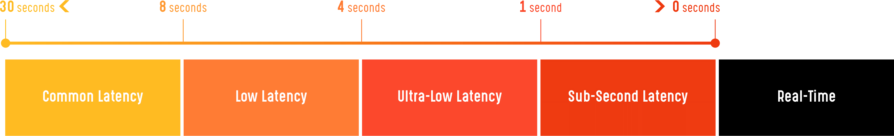
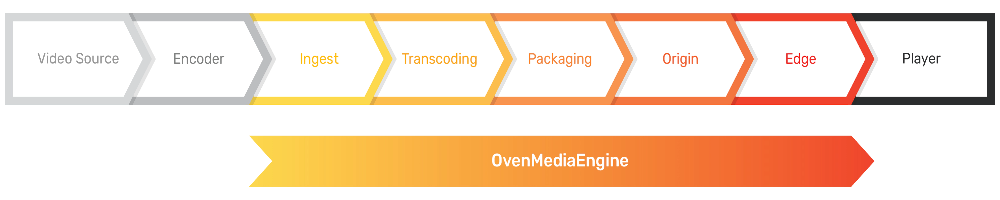
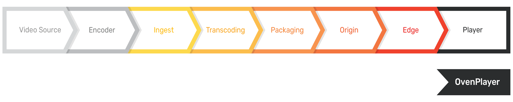
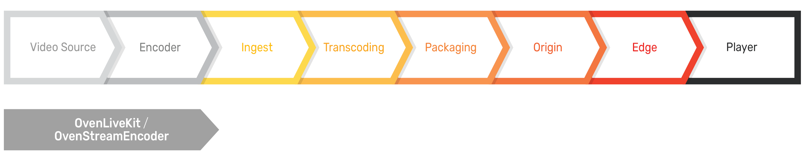

What is Sub-Second Latency Streaming?
Why does latency occur during streaming?
There are many reasons. Latency from a video source for streaming accumulates through many sections of a system, but the most significant cause is chunk length created in Packaging because of the HLS and MPEG-DASH recommendation to maintain three segments of about 2 to 10 seconds. Thus, this results in about 6 to 30 seconds of latency.
And the next significant reason is the buffering of devices such as Encoder, Ingest, Transcoding or Player. Buffering is required to solve frequent transmission interruptions due to network jitter, and latency increases with more buffering.
What is Sub-Second Latency Streaming?

Streaming with a latency range of 4 to 8 seconds is called Low Latency, and if the delay is less than 1 second, it is called Sub-Second Latency. However, the latency of streaming services that still compliant with the traditional method is still 8 to 30 seconds.
How can I build a service with Sub-Second Latency Streaming?

It is difficult to implement a direct connection from Ingest to Player in Sub-Second Latency Streaming service. However, OvenMediaEngine (OME) is one system that achieves Sub-Second Latency from Ingest to Player. OME can receive RTMP, MPEG-TS, RTSP Pull/Push from the most popular encoders such as OvenLiveKit, OBS, XSplit, and more. And it supports sub-second latency streaming transmission using Low Latency HLS (LLHLS and WebRTC.

OvenPlayer is the most optimized HTML5 player for OvenMediaEngine. It can stream using WebRTC, LLHLS, HLS, and RTMP. You can directly embed OvenPlayer into your web page by inserting a few lines of source code. In other words, OME and OvenPlayer have been developed so that anyone can use Sub-Second Latency Streaming using a simple setting without a separate system.

Finally, if you want to build a sub-second latency streaming service on a mobile environment, you need OvenLiveKit, the most optimized mobile encoder for OvenMediaEngine. We uploaded OvenStreamEncoder, a sample app based on OvenLiveKit for Android, to Google Play. Please try testing with this. Our results show that in an optimized environment, streaming latency was less than five frames.